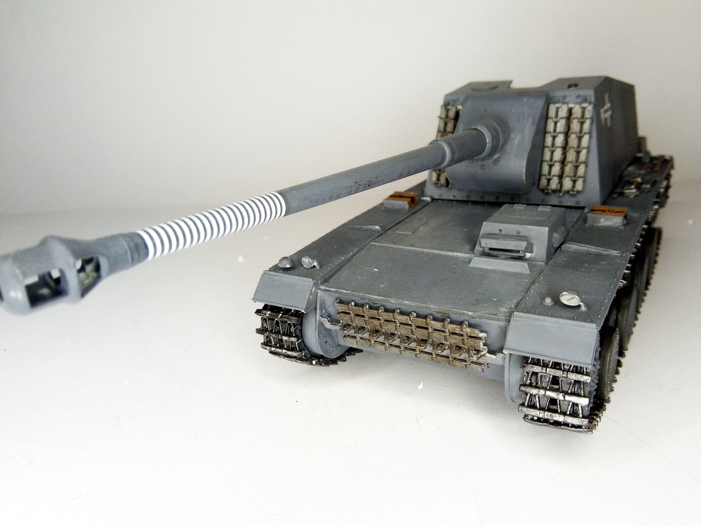
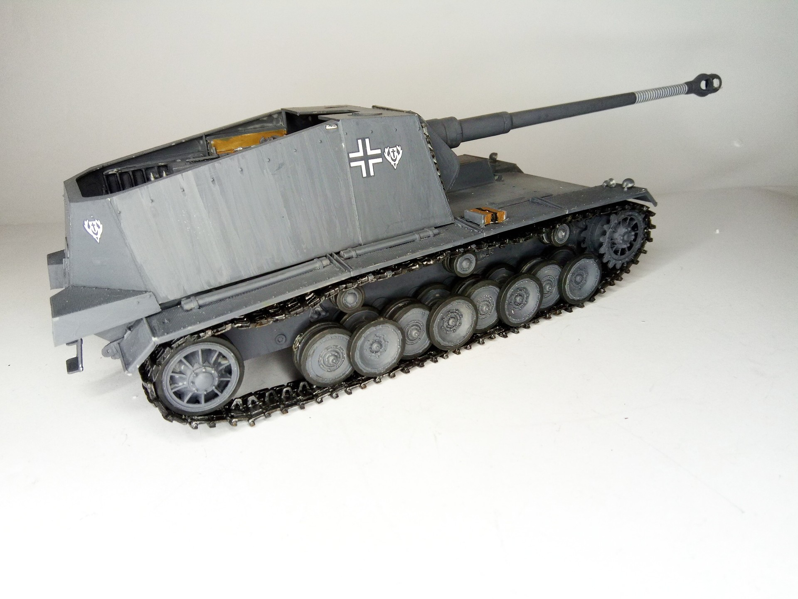

Mezzi militari · scale model archive
Panzerselbstfahrlafette für 12,8-cm-Kanone 40 'Sturer Emil'
Panzerselbstfahrlafette für 12,8-cm-Kanone 40 'Sturer Emil' — Kit: Trumpeter, Scale: 1/35. Only two built, amazingly one survived the war and it is now…

Photo gallery

English description
Only two built, amazingly one survived the war and it is now on display at the tank museum in Moskow
#1/35 #Trumpeter #SturerEmil
Descrizione italiana
Ne furono costruiti solo due; sorprendentemente uno sopravvisse alla guerra ed è oggi esposto al museo dei carri di Mosca.